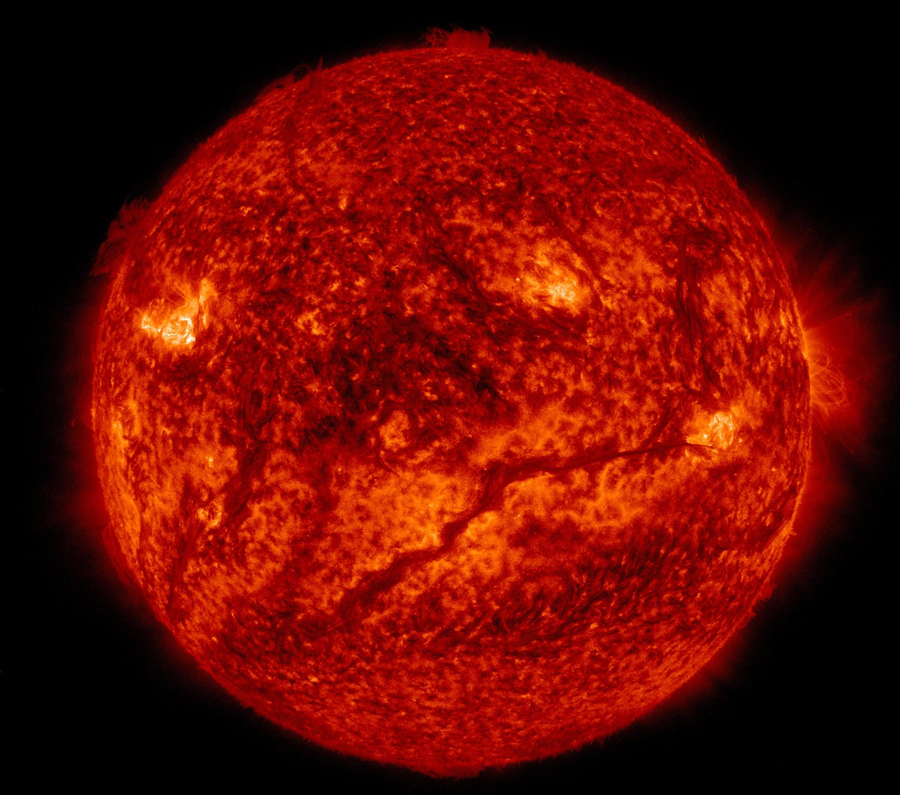
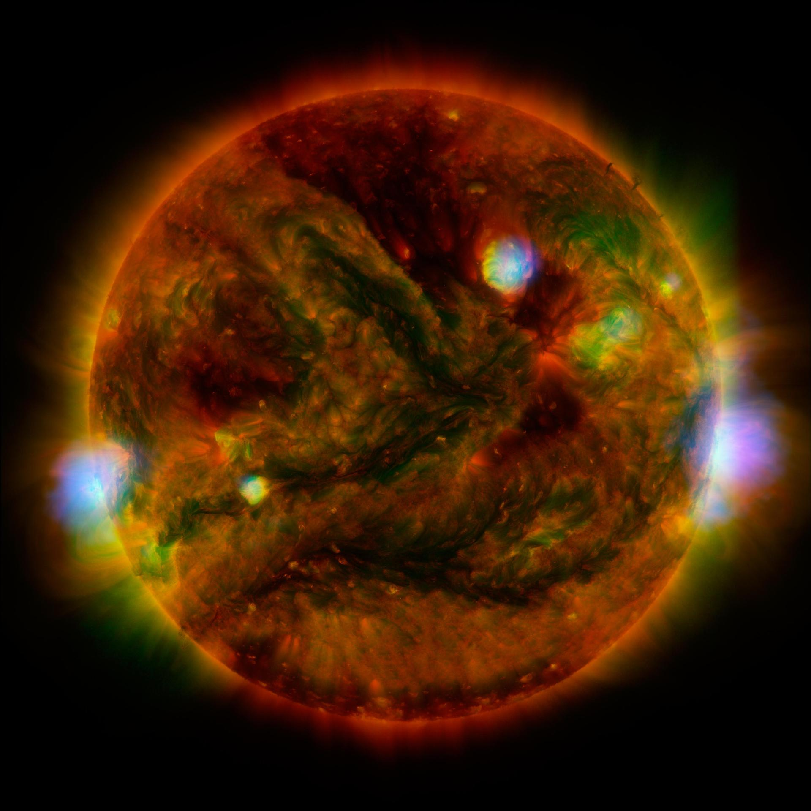
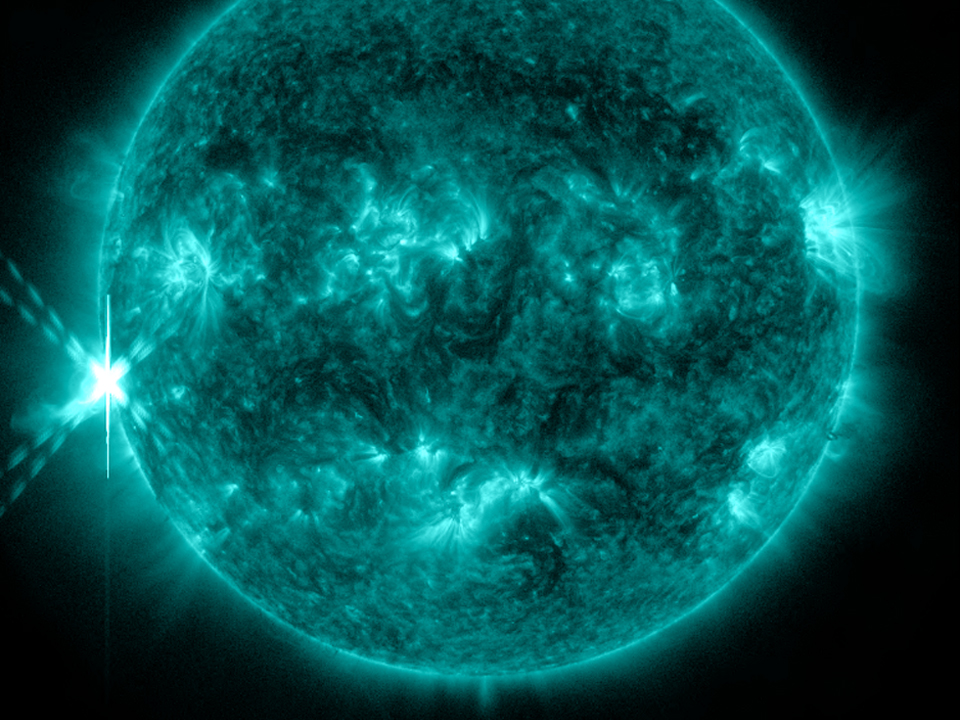
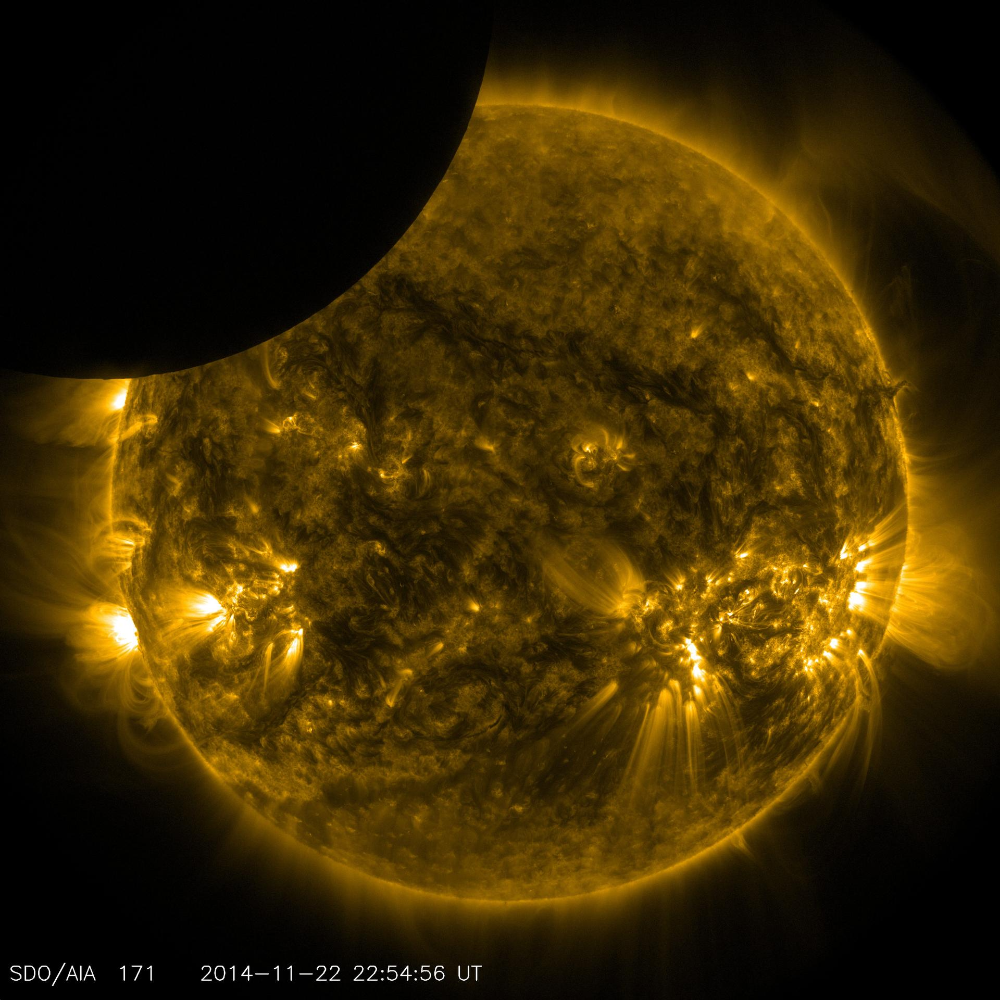
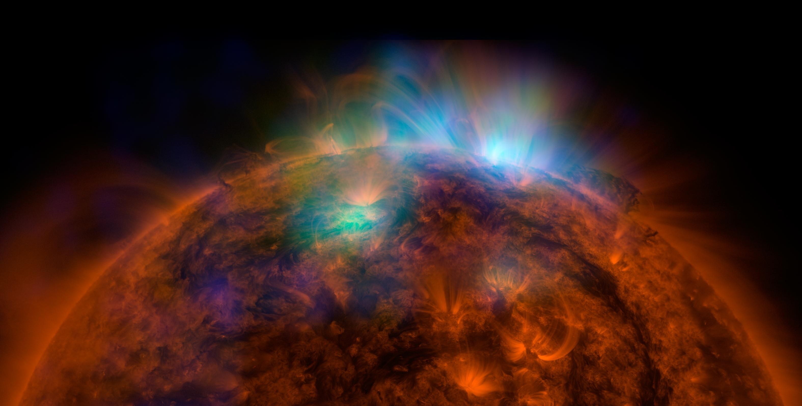
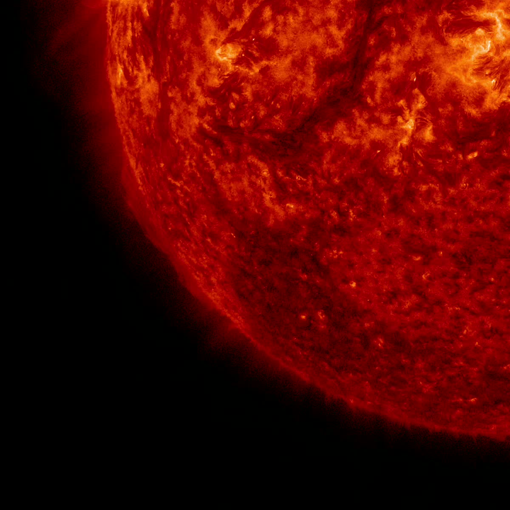
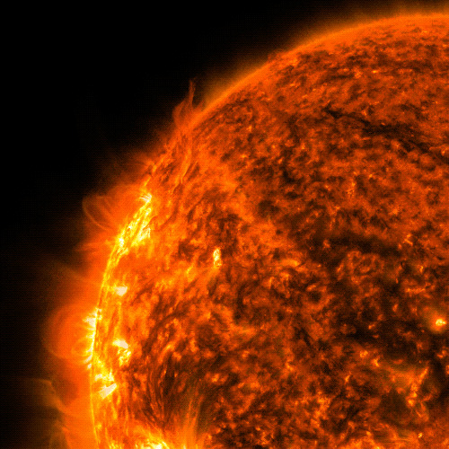

Современная физика Солнца: от внутреннего строения до гелиосферных возмущений
Глава 1. Внутренняя структура и гелиосейсмология: взгляд в недра звезды
Солнце находится в состоянии строгого гидростатического равновесия, где гравитационное сжатие уравновешивается градиентом давления. Детальная структура недр изучается методами гелиосейсмологии — анализа акустических (p-modes) и гравитационных (g-modes) волн. Ядро (до 0,25 R_sun) представляет собой зону энергогенерации с температурой 15,7 млн К и плотностью 150 г/см3. Здесь, в условиях твердотельного вращения, протекает протон-протонный цикл. Выше, до глубины 0,70 R_sun, простирается зона лучистого переноса, где энергия диффундирует посредством переизлучения фотонов. Процесс случайного блуждания фотона занимает от 10 000 до 170 000 лет, что означает, что видимый нами сегодня свет был рожден в эпоху последнего ледникового периода. Ключевым элементом внутренней динамики является тахоклин — узкая область сдвига на глубине 0,70 R_sun. Здесь переход от твердотельного вращения ядра к дифференциальному вращению конвективной зоны генерирует мощное тороидальное магнитное поле, служащее топливом для солнечного динамо. Внешние 30 процентов радиуса занимает конвективная зона, где энергия переносится массопереносом плазмы, формируя иерархию структур от гранул до супергранул.

Глава 2. Термоядерный синтез и нейтринная астрономия
Источником энергии Солнца является протон-протонный цикл (pp-цикл). Суммарная реакция превращения четырех протонов в ядро гелия-4 (4 H-1 -> He-4 + 2 e+ + 2 nu_e + гамма) высвобождает 26,7 МэВ. Выделение энергии описывается уравнением E = дельта m c^2, где дефект массы дельта m составляет около 0,7 процента. Нейтрино, рождающиеся в pp-цикле, CNO-цикле и pep-реакции, служат единственным прямым инструментом зондирования ядра. Детектор Borexino в лаборатории Гран-Сассо успешно измерил полный спектр солнечных нейтрино, включая низкоэнергетические pp-нейтрино и впервые обнаруженные нейтрино CNO-цикла. Эти данные подтверждают стандартную модель звездной эволюции, однако обостряют проблему металличности: существует расхождение (около 10–15 процентов) между содержанием тяжелых элементов, определенным по спектральным линиям фотосферы, и значениями, требуемыми гелиосейсмологией. Точное измерение потока CNO-нейтрино является ключом к разрешению этого фундаментального парадокса.

Глава 3. Магнитное динамо и 22-летний магнитный цикл
Поверхностная 11-летняя цикличность (цикл Швабе) является видимым проявлением фундаментального 22-летнего магнитного цикла Хейла. Процесс описывается альфа-омега динамо механизмом. Омега-эффект, действующий в тахоклине, растягивает полоидальное поле в тороидальное. Всплывающие из-за магнитной плавучести трубки достигают фотосферы, где альфа-эффект (закручивание из-за вращения и эффекта Кориолиса) регенерирует полоидальное поле, но с инвертированной полярностью. Этот механизм объясняет закон Хейла (смену полярности пятен каждые 11 лет) и правило Джой-наклона. В настоящее время Солнце проходит 25-й цикл, активность которого аномально превышает прогнозы NASA, что указывает на возможную нелинейность динамо-процессов.

Глава 4. Фотосфера: иерархия магнитных структур
Фотосфера — оптически тонкий слой толщиной около 500 км (тау примерно равно 1), где конвективные ячейки проявляются в виде грануляции. Данные инструментов HMI (SDO) и PHI (Solar Orbiter) с разрешением до 200 км показали, что магнитный поток распределен иерархически. Лишь малая часть поля концентрируется в пятнах (напряженность 3–4 кГс). Основная масса — это магнитная сеть и слабые (10–100 Гс) внутрисетевые элементы. Детальные снимки SolO позволили изучить микроструктуру световых мостов в тенях пятен — тонких хребтов горячей плазмы, демонстрирующих собственную мелкомасштабную конвекцию и являющихся каналами утечки магнитной энергии.

Глава 5. Проблема нагрева короны: синтез волн и нановспышек
Парадокс короны заключается в росте температуры от 5800 К (фотосфера) до 1,5–2 млн К при удалении от источника энергии. Данные PSP и SolO указывают на синтез двух классических гипотез. Во-первых, PSP, находясь в суб-альвеновской зоне (13–20 R_sun), обнаружил обратные альвеновские волны. Их нелинейное взаимодействие с прямыми волнами, генерируемыми конвекцией, создает каскадную турбулентность, которая эффективно диссипирует, передавая импульс и энергию частицам. Во-вторых, инструмент EUI (Solar Orbiter) визуализировал нановспышки — миллионы микровспышек с энергией 10^24–10^26 эрг, происходящих в межгранулярных областях. Статистический ансамбль этих событий способен обеспечить базовый нагрев спокойной короны. Вместо классических спикул основным каналом обмена массой между хромосферой и короной признаны корональные дыры II типа — многочисленные мелкие магнитные джеты.

Глава 6. Кинетика солнечного ветра: открытие «переключаемых потоков»
До миссии PSP считалось, что солнечный ветер ускоряется постепенно, достигая сверхзвуковых скоростей только за орбитой Земли. PSP разрушил эту картину, обнаружив, что высокоскоростной ветер из корональных дыр ускоряется до сотен км/с уже на расстоянии 20 R_sun. Главным открытием стали переключаемые потоки (switchbacks) — локальные инверсии магнитного поля на 180 градусов, сопровождающиеся скачком скорости плазмы. Это S-образные изгибы магнитных линий, образовавшиеся в результате пересоединения открытых и замкнутых полей в нижней короне. Когда такой шланг выпрямляется, он передает плазме импульс. Именно эти структуры являются недостающим звеном, объясняющим быстрое ускорение ветра и его закручивание в спираль Архимеда.

Глава 7. Трансгелиофизические возмущения: от магнитного жгута до гелиосферного токового слоя
Корональные выбросы массы (КВМ) — это трехэтапный процесс: медленная накачка энергии в магнитный жгут, его эрупция и взрывное магнитное пересоединение под ним, создающее ударную волну. Геоэффективность КВМ определяется не скоростью, а величиной и длительностью южного компонента межпланетного магнитного поля (Bz меньше 0), сформированного в процессе пересоединения с магнитосферой Земли. Выброшенная плазма формирует гелиосферу. В экваториальной плоскости магнитное поле Солнца сворачивается в волнистую поверхность — гелиосферный токовый слой (ГТС). В максимуме активности ГТС становится крайне гофрированным. Прохождение Земли через крутой фронт ГТС вызывает внезапные геомагнитные импульсы (SSC), индуцирующие токи в трубопроводах быстрее, чем классические бури. Кроме того, магнитные облака КВМ работают как щиты, отклоняя галактические космические лучи (Forbush-эффект), что приводит к кратковременному падению ионизации тропосферы.

Глава 8. Техногенные риски, Forbush-эффект и перспективы защиты
Солнечная активность представляет экзистенциальную угрозу для технологической инфраструктуры. Орбитальная инфраструктура: накопление заряда на диэлектриках спутников во время бурь приводит к пробоям и потере аппаратов. PSP также зафиксировал в КВМ высокую концентрацию межпланетной пыли, создающую риск абразивного повреждения оптики дальних миссий. Наземные системы: геоиндуцированные токи (ГИТ) в ЛЭП и трубопроводах способны расплавлять трансформаторы (событие в Квебеке, 1989 г.). Для России с ее протяженными газопроводами в высоких широтах мониторинг ГИТ является элементом национальной безопасности. Перспективы: следующим шагом станет миссия HelioSwarm (NASA, после 2028 г.) — флот из 9 аппаратов для трехмерного измерения турбулентности. Solar Orbiter в 2025–2027 годах проведет измерения магнитных полей над полюсами Солнца, что позволит предсказать амплитуду 26-го цикла. Развитие нейтринной астрономии (Hyper-Kamiokande) позволит использовать Солнце как инструмент для поиска аксионов — кандидатов на роль частиц темной материи.
